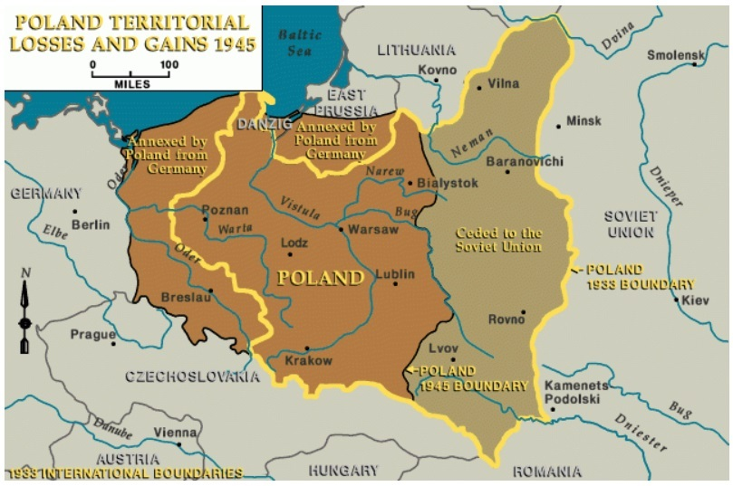

Україна під час Другої світової війни 1939-1945 рр.
Участь українців у Другій світовій війні не обмежувалася періодом протистояння між СРСР і Німеччиною в
1941—1945 років.
1941—1945 років.
Друга світова війна від самого початку відбувалася на території України.
Участь українців у Другій світовій війні не обмежувалася періодом протистояння між СРСР і Німеччиною в 1941—1945 років. Друга світова війна від самого початку відбувалася на території України. У складі польської армії українці воювали проти Німеччини з перших годин війни 1 вересня 1939 року.
Від 17 вересня українці також воювали на боці СРСР проти поляків. Ще до початку Другої світової війни, 14—18 березня 1939 року, українці Карпатської України воювали за власну свободу з Угорщиною, яку підтримувала гітлерівська Німеччина.
Коротка боротьба Карпатської України коштувала, за різними даними, від 2 до 6,5 тисяч життів її захисників. Українці у складі армії Польської держави почали воювати з Німеччиною з 1 вересня 1939 року. Серед мільйона польських військових, 106-112 тисяч (за деякими оцінками, до 120 тисяч) були українцями. Від 17 вересня 1939 року у конфлікт вступила Червона армія.
Від 17 вересня українці також воювали на боці СРСР проти поляків. Ще до початку Другої світової війни, 14—18 березня 1939 року, українці Карпатської України воювали за власну свободу з Угорщиною, яку підтримувала гітлерівська Німеччина.
Коротка боротьба Карпатської України коштувала, за різними даними, від 2 до 6,5 тисяч життів її захисників. Українці у складі армії Польської держави почали воювати з Німеччиною з 1 вересня 1939 року. Серед мільйона польських військових, 106-112 тисяч (за деякими оцінками, до 120 тисяч) були українцями. Від 17 вересня 1939 року у конфлікт вступила Червона армія.

ПЕРЕДУМОВОЮ ПОДІЛУ СТАЛО ПІДПИСАННЯ ДОГОВОРУ МІЖ РАДЯНСЬКИМ СОЮЗОМ ТА НАЦИСТСЬКОЮ НІМЕЧЧИНОЮ. В НЬОМУ ЗАЗНАЧАЛОСЯ, ЩО КОРДОН МІЖ СОЮЗНИМИ ДЕРЖАВАМИ ПРОЙДЕ «ПРИБЛИЗНО ПО ЛІНІЇ РІЧОК НАРВА, ВІСЛА, САНА».АНЕКСОВАНІ СРСР ПОЛЬСЬКІ ЗЕМЛІ БУЛИ ВКЛЮЧЕНІ ДО СКЛАДУ УССР ТА БССР.
Після вторгнення радянських військ на територію Польщі українці брали участь у бойових діях і на боці Польщі, і на боці СРСР. Після Вересневої кампанії у німецькому полоні опинилося близько 60 тисяч українців, до радянського полону потрапило понад 20 тисяч.
Також кілька сотень українців вступило у війну у складі Вермахту, в рамках формування ВВН («військові відділи націоналістів»). У лавах Червоної армії українці брали участь у радянсько-фінській війні 1939—1940 років. Кількість загиблих українців у радянсько-фінській війні оцінюють щонайменше в 27 тисяч осіб (за деякими даними — 40 тисяч).Трагедією українського народу була відсутність власної держави, а отже, його розподіл між усіма воюючими сторонами у цьому конфлікті. На момент початку німецької агресії проти СРСР українці вже більше двох років перебували у вирі великої війни.
Також кілька сотень українців вступило у війну у складі Вермахту, в рамках формування ВВН («військові відділи націоналістів»). У лавах Червоної армії українці брали участь у радянсько-фінській війні 1939—1940 років. Кількість загиблих українців у радянсько-фінській війні оцінюють щонайменше в 27 тисяч осіб (за деякими даними — 40 тисяч).Трагедією українського народу була відсутність власної держави, а отже, його розподіл між усіма воюючими сторонами у цьому конфлікті. На момент початку німецької агресії проти СРСР українці вже більше двох років перебували у вирі великої війни.


© 2023 memory.org.ua
Всі права захищені.
Всі права захищені.
ІСТОРИЧНІ ПЕРІОДИ
Українська революція та боротьба за збереження державної незалежності (1917-1921 рр.)Голодомор (1932-1933 рр.)Червоний терор в 1917-1939 рр.Україна під час Другої світової війни (1939-1945 рр.)Рух опору (ОУН, УПА)Україна в перші повоєнні роки (1945 — на початку 1950-х рр.)Україна в умовах десталінізації (1953-1964 рр.)Україна в період загострення кризи радянської системи (1965-1985 рр.)Розпад Радянського Союзу та незалежна Україна (1985-1991 рр.)Російсько-українська війнаУкраїнці в еміграціїВінницька психіатрична лікарняТабір для радянських військовополонених
Архів
Архів військовополоненихАВТОРСЬКИЙ КОНТЕНТ
Думки, висновки чи рекомендації належать авторам матеріалів, та можуть не співпадати з поглядами адміністрації сайту.Фінансова звітність за 2020р.Збір коштів на ЗСУСпіввласником сайту є ГО «Брат за брата України»
Власником сайту є ГО "Автомайдан @Вінниччина"e-mail: avtomaydanvin@gmail.comконтактний телефон: 063 933 0093